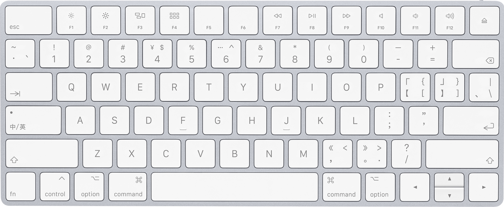

6 VS Code 代码运行自动化
这一节课我们要来让VSCode自动编译、运行我们的代码。说是自动，其实是用一个快捷键代替我们再终端重复敲命令的过程。接下来就让我们开始！
引入
回忆之前我们编译、运行代码的过程，大概是需要在集成终端输入：
g++ say_hi.cpp -o say_hi.out -W -Wall -O2 -std=c++17
./say_hi.out
这个，还挺长的，敲起来挺麻烦的。如何一键执行这两个代码呢？我们需要下载一个插件：Code Runner（简单查看Code Runner的说明；我已经将我们执行代码需要用的项摘了出来；在哪里设置这些选项呢？settings.json）
Code Runner
在settings.json中添加（注意json文件的格式）：
{
// --------------------------------------------------------------------------------------
// Code Runner
// To run code:
// use shortcut "⌃ ⌥ N" *
// or press F1 and then select/type Run Code,
// or right click the Text Editor and then click Run Code in editor context menu
// or click Run Code button in editor title menu
// or click Run Code button in context menu of file explorer
// To stop the running code:
// use shortcut "⌃ ⌥ M" *
// or press F1 and then select/type Stop Code Run
// or right click the Output Channel and then click Stop Code Run in context menu
"code-runner.executorMap": {
// Introduction:
// Make sure the executor PATH of each language is set in the environment variable.
// You could also add entry into "code-runner.executorMap" to set the executor PATH.
// Supported customized parameters:
// $workspaceRoot: The path of the folder opened in VS Code
// $dir: The directory of the code file being run
// $fullFileName: The full name of the code file being run
// $fileName: The base name of the code file being run, that is the file without the directory
// $fileNameWithoutExt: The base name of the code file being run without its extension
/* ------ 编译、运行只有一个文件的cpp文件 ------ */
"cpp": "g++ $fullFileName -o $dir\"$fileNameWithoutExt\"\".out\" -W -Wall -O2 -std=c++17 && $dir\"$fileNameWithoutExt\"\".out\"",
// 其中 $fullFileName 是绝对路径，是主文件
// 自己决定是否加入 && rm $dir\"$fileNameWithoutExt\"\".out\"（也可以添加"files.exclude"）
/* ------ 编译、运行多个cpp文件 ------ */
// "cpp": "g++ $fullFileName <file_to_link> -o $dir\"$fileNameWithoutExt\"\".out\" -W -Wall -O2 -std=c++17 && $dir\"$fileNameWithoutExt\"\".out\"",
// <file_to_link>的写法：
// 一般的，你也可以直接写绝对路径
// \"/path/xxxx.cpp\"
// 如果你链接的cpp文件和主文件在一个目录下：
// $dir\"xxxx.cpp\"
// 更一般的，如果你链接的cpp文件不和主文件在一个目录下，需要从当前VSCode的工作目录补充相对路径从而形成绝对路径：
// $workspaceRoot\"relative/path/xxxx.cpp\"
/* ------ 编译c文件 ------ */
"c": "gcc $fullFileName -o $dir\"$fileNameWithoutExt\"\".out\" -W -Wall -O2 -std=c17 && $dir\"$fileNameWithoutExt\"\".out\"",
// "cpp": "gcc $fullFileName <file_to_link> -o $dir\"$fileNameWithoutExt\"\".out\" -W -Wall -O2 -std=c17 && $dir\"$fileNameWithoutExt\"\".out\"",
},
// Whether to clear previous output before each run (default is false):
"code-runner.clearPreviousOutput": true,
// Whether to save all files before running (default is false):
"code-runner.saveAllFilesBeforeRun": false,
// Whether to save the current file before running (default is false):
"code-runner.saveFileBeforeRun": true,
// Whether to show extra execution message like [Running] ... and [Done] ... (default is true):
"code-runner.showExecutionMessage": true, // cannot see that message is you set "code-runner.runInTerminal" to true
// Whether to run code in Integrated Terminal (only support to run whole file in Integrated Terminal, neither untitled file nor code snippet) (default is false):
"code-runner.runInTerminal": true, // cannot input data when setting to false
// Whether to preserve focus on code editor after code run is triggered (default is true, the code editor will keep focus; when it is false, Terminal or Output Channel will take focus):
"code-runner.preserveFocus": false,
// Whether to ignore selection to always run entire file. (Default is false)
"code-runner.ignoreSelection": true,
// --------------------------------------------------------------------------------------
// 添加希望被忽略的文件,这样一些文件虽然存在于当前工作目录下,但是不会被显示在左侧的文件浏览器里
"files.exclude": {
"**/*.dSYM": true,
"**/*.out": true,
},
// --------------------------------------------------------------------------------------
}
功能介绍
查看我写的注释
鼠标悬停查看提示
光标放在选项或选项设置处 ⌘I 以打开 IntellSense
设置快捷键
原本的快捷键太不顺手了

修改为：⌘R ⇧⌘R（搜索code run）
排除文件
（打开设置看一下） （说一下一个可执行文件也就几十K，而且还是覆盖写的，多出来的那些不管也可以；你要删的话打开访达按类型排⇧选中删就可以了；或者直接添加rm）
最后说几句
如果你不需要注释，那么就可以直接删除。还记得我在第一节课说的，网上的教程良莠不齐吗？一个很大的原因就是网上的教程没什么注释。作为一个初学者，第一次用VSCode，如果看到的配置文件没有注释，不知道这些插件从哪里来，不知道怎么看插件的使用说明书，也不知道命令怎么编写组合，那当然会看不懂网上的教程了。
我做这份教程的初心就是，希望大家能真正从零开始，知道这些配置的来源，能够自己搭建自己喜欢的编程环境。到了这节课大家其实已经能感觉到，编译、运行并不是什么复杂的事情，借助VSCode的Code Runner插件，结合自己前几节课所学的命令行，再加上VSCode的个性化配置，你已经可以做到这件事情了。
但其实还有一件事情需要去做。我们发现，Code Runner这个插件只能去运行代码，但是不能调试代码。如果我在代码的某一行打上断点，希望程序运行到这里停下来，你发现Code Runner无法做到这件事情。这就是我们下节课要学习的东西：用VSCode调试Cpp代码。
不出意外的话，下节课应该是最后一节课了！大家加油！